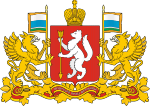

| Флаг | Герб |
|  |
Область получила название от её ыентра - города Свердловская (ныне - Екатеринбург). Название появилось 17 января 1934 года вместе с образованием самой области.
Главные реки:
Климат: континентальный
Полезные ископаемые:
Промышленность: горнодобывающая и металлургическая
Населённые пункты: